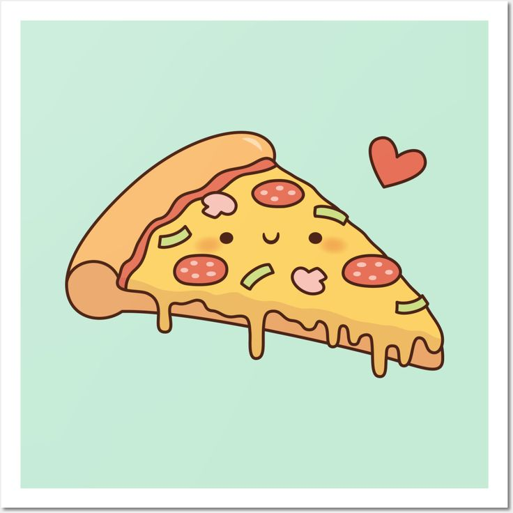

Pizza is a popular Italian dish that consists of a round, flat base of dough topped with various ingredients such as tomato sauce, cheese, and toppings like pepperoni, mushrooms, and olives. It is typically baked in an oven until the crust is crispy and the cheese is melted and bubbly. Pizza can be enjoyed in many different styles and flavors, making it a favorite food for people around the world.
History of Pizza
Pizza has a long history that dates back to ancient times. The concept of flatbreads topped with various ingredients can be traced back to ancient civilizations such as the Egyptians, Greeks, and Romans. However, the modern pizza as we know it today originated in Naples, Italy in the 18th century. It was initially a simple dish made with tomato sauce, cheese, and herbs, and was popular among the working class. Over time, pizza evolved and gained popularity worldwide, leading to the creation of various regional styles and toppings.

How to Make Pizza
Making pizza at home can be a fun and rewarding experience. Here is a simple recipe to get you started:
Ingredients:
1 cup warm water
2 1/4 teaspoons active dry yeast
2 tablespoons olive oil
3 cups all-purpose flour
1 teaspoon salt
1/2 cup tomato sauce
1 1/2 cups shredded mozzarella cheese
Your choice of toppings (pepperoni, mushrooms, olives, etc.)
Instructions:
In a small bowl, combine warm water and yeast. Let it sit for about 5 minutes until it becomes frothy.
In a large mixing bowl, combine flour and salt. Add the yeast mixture and olive oil. Mix until a dough forms.
Knead the dough on a floured surface for about 5-7 minutes until it becomes smooth and elastic.
Place the dough in a greased bowl, cover it with a damp cloth, and let it rise in a warm place for about 1 hour or until it doubles in size.
Preheat your oven to 475°F (245°C). Punch down the dough and roll it out into a circle on a floured surface.
Transfer the rolled-out dough to a pizza stone or baking sheet. Spread tomato sauce over the dough, leaving a small border around the edges.
Sprinkle shredded mozzarella cheese over the sauce, and add your desired toppings.
Bake the pizza in the preheated oven for about 12-15 minutes or until the crust is golden brown and the cheese is melted and bubbly.
Remove from the oven, let it cool for a few minutes, then slice and enjoy!